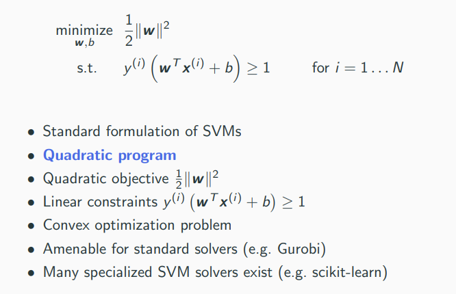
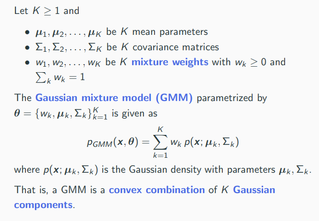

Machine Learning 1 VO
- Early exam: (since some exchange students need to depart early) Friday, 7th June, 14:15, HS i13
- Main exam: Tuesday, 2nd July, 11:00, HS i13
- See TUGonline for further exam dates in the future
- Duration: 120 minutes
- 60% multiple choice questions, 40% open questions
1 Introduction
Learning
Learning is any process by which a system improves performance from experience. - Herbert Simon
- system: (internal state of) animal/human/learning machine
- process: adaptation, change, optimization, algorithm
- experience: input, data, observations
- performance: loss, fitness, score, utility, objective
Classification vs. Regression
- Classification: discrete, unordered targets
- Regression: continuous, ordered targets
Unsupervised vs. Supervised Learning
Unsupervised: Find interesting patterns in data. No known mapping of inputs to outputs.
- Principal component analysis (PCA)
- K-means clustering
- Gaussian mixture models (GMM) (density estimation, soft clustering)
Supervised: Use labeled dataset (training data) to predict labels for other data points (test input). See image below.
- Linear regression, logistic regression
- Neural networks (ANN)
- K-nearest neighbours (KNN)
- Decision trees, random forests
- Support vector machines (SVMs)
- Linear discriminant analysis (LDA)
2 Mathematical Basics I
3 Mathematical Basics II
Gradient Descent
- start at some point x
- take a small step downhill, i.e. in the direction of the negative gradient (steepest descend)
- repeat, until you are in a valley (local minimum)
If step-size is sufficiently small, convergence to a local minimum. For convex functions, any local minimum is also a global minimum.
Stochastic Gradient Descent (SGD)
Sometimes one might not be able to evaluate f exactly, but just a "noisy version".
For theoretical convergence, the step-size needs to be reduced over number of iterations t.
Multivariate Gaussian Density
As this is a probability density, integrating over an area gives the corresponding probability.
4 Linear Regression
Regression: Predict a continuous target variable from one or more input variables. Hence, a form of supervised learning.
When the hypothesis space is restricted to all affine functions (), we speak of linear regression.
Loss
A loss function (objective, cost function) is a notion of fitness. The lower loss, the better.
Least Squares Loss Function
Average the squared error over the whole data set.
Least-squares has an interesting connection to Gaussian density estimation and the maximum likelihood principle.
5 Non-Linear Regression, Logistic Regression
Non-Linear Features
Idea: We can apply any pre-processing (non-linear function) to the input features and add them to the design matrix! Regression with non-linear features works exactly the same as before.
Radial Basis Functions
Classification, Logistic Regression
Confusing name: It’s called logistic regression, even though it is a classification model
Minimizing Cross-Entropy
Cross-Entropy Loss is differentiable and convex, thus we can use gradient descent to find a global minimum.
6 Principal Component Analysis
PCA is a unsupervised learning technique for dimensionality reduction. Idea of PCA: Learn an "interesting" subspace V.
Targets and Applications of Dimensionality Reduction
Potential target characteristics (qualitative):
- locality preserving
- allow for a good reconstruction (decoder function)
- captures as much variance or information as possible
Applications of dimensionality reduction:
- lossy compression
- feature extraction (as input for other ML models)
- data visualization
Principal Directions
Which of the three directions b', b'', b''' is the most "interesting" one? Answer: b' is the direction where
- the variance of the projected data is maximal
- or, equivalently, the sum of squared projection errors is minimal
The vector b' is called the first principal direction of dataset.
Computing Principal Components
Linear Discriminant Analysis
- PCA is unsupervised, i.e. there are no targets
- If one additionally has target values, one might use them to guide dimensionality reduction
- A classical method is Fisher’s linear discriminant analysis (LDA), using class information
7 Neural Networks I
Excellent Tutorial by 3Blue1Brown https://www.youtube.com/playlist?list=PLZHQObOWTQDNU6R1_67000Dx_ZCJB-3pi
Neuron
Multilayer Perceptron (MLP)
Common Activation Functions
Why do we need non-linear activation functions ?
- Linear functions often not adequate for real-world datasets.
- Plug-and-play philosophy of ANNs: Construct complicated functions out of simple ones. This does not work with linear neurons!
Expressive Efficiency
- Shallow networks (1 hidden layer)
- universal approximators
- However, some function classes require exponentially many neurons, in the number of inputs
- Deep networks (many hidden layers)
- can typically represent represent the same function classes with only polynomial size
- This phenomenon is called expressive efficiency – Deep networks can represent non-linear function more efficiently than shallow ones
- Traditional downside: harder to train. However, modern approaches can be scaled to thousands of layers
- Classical example: parity function – requires exponential size in shallow networks, but only polynomial size in deep networks
Automatic Differentiation (AD) (autodiff) (backpropagation)
Neural networks are powerful function approximators, with hundreds to hundreds of billions of parameters. How do we learn these parameters? Gradient descent of the loss function!
In neural networks a special case of AD, namely reverse mode AD is usually called backpropagation of error (backprop)
8 Model selection, Evaluation
We never observe the "true" pattern or principle, always just an imperfect and noisy version of it: the training data D. We use the training data to guide our search for a model (hypothesis), in the hope that it comes close to the ground truth.
Overfitting
When using a too large (powerful) model class H, we run risk to select a model which fits the data D well, but not the true underlying concept. We say "the model overfits to the data and does not generalize well."
Occam’s Razor, Lex Parsimoniae: considering competing hypotheses with similar predictions and explanatory power, one should prefer the hypothesis that requires the fewest assumptions.
- Memorization, learning by heart: The model is powerful enough to memorize the training set, but does not generalize well to the intended concept.
- Too flexible model/Too large model class: the hypothesis class contains too many models. Many are compatible with the available data (achieve low loss), yet they are very different.
- Too little data: A large model class is good, in principle, since it more likely contains the “true concept.” But we simply have too little data (information) to reliably identify the “right” model (parameter).
Underfitting
The converse effect of overfitting is underfitting - using a too weak model class, such that the model does fit neither the training data nor the true underlying concept well.
Underfitting is usually not much of a problem, since it is rather easy to increase the model power. Overfitting requires more sophisticated strategies.
Model Evaluation
After optimization, the empirical test loss is an overly optimistic estimate of the true loss. How can we better estimate the true loss and detect overfitting? We need two datasets:
- a training set which we use to learn the model
- a test set which we use to evaluate/test the model
Model Selection
Most ML models have several hyper-parameters:
- polynomial degree in polynomial regression
- number of layers and units in neural networks
- trade-off parameter in support vector machines (to be discussed)
- thresholds in decision trees (to be discussed)
When selecting a model according to minimal test error, we are actually learning on the test set!
Really, we need three datasets:
- a training set which we use to learn the model
- a validation set which we use to do model selection by, selecting the hyper-parameter
- a test set which we use to evaluate the model
Cross-Validation
Reserving samples for the validation set is called the holdout method. The data is split once into training and validation set. In cross-validation, we split the data multiple times into training and validation set. The validation results for each split are averaged.
K-fold cross-validation is the most widely used method for cross-validation. Randomly split the data in K parts (folds). Train in turn on all except the kth fold and compute the loss. The final validation loss is the mean of the k losses.
- If dataset is (relatively) large and training is expensive
- ⇒ Holdout method
- If dataset is small and training is (relatively) cheap
- ⇒ K-fold cross-validation
Alternatives:
- Leave-one-out cross-validation: extreme case of K-fold with K = N, i.e. we treat each single sample in turn as validation set.
- Repeated random sub-sampling: instead of fixing K folds, we draw K times a random subset as validation set.
9 Neural Networks II
Autodiff in Neural Nets
Classification with MLPs
10 K-Nearest Neighbors, Decision Trees and Random Forests
Bayes Optimal Classifier
Assume a classification setting and that we know the true data-generating distribution. Then, we can use Bayes law to calculate
giving us the Bayes optimal classifier which suffers the least true classification error.
K-Nearest Neighbors (KNN)
- Classification: Label test sample according to majority vote of K nearest neighbours. Break ties randomly.
- Regression: Average targets of K nearest neighbours
KNN converges towards the Bayes optimal classifier given , , and . A classifier with this property is called consistent.
Decision Trees
Decision trees represent a partition of the input space. Decision nodes (internal nodes) are associated with one or more features and a boolean function. Prediction nodes (leaves) are associated with either a fixed label y, or a distribution over labels p(Y).
CART Algorithm
Stopping Criterion
- Threshold determining when improvement of cost is too small
- Another threshold for determining when there are too few data points
- Furthermore, one introduce a maximal tree depth
Costs - Impurity Measures
Random Forests
Individual models (like decision trees) easily overfit, i.e. they have low bias but high variance. Idea: instead of training one model, train K models and aggregate them
- Majority vote for classification
- Averaging for regression
Bagging = Bootstrapping and Aggregating
- We have only one dataset—use bootstrapping to generate synthetic copies of the training data
- In statistics, bootstrapping is a resampling method to produces uncertainty estimates
- Given N samples, generate K new datasets of size N by sampling with replacement
- These new datasets are called bootstraps
11 Support Vector Machines (SVM), Kernel Trick

Learning Support Vector Machines

SVMs with Soft-Margin
Dual SVM and the Kernel Trick
It can be shown that the following is equivalent (dual problem):
12 K-Means Clustering
Organize N objects in K clusters, i.e., groups of similar objects. Relation to classification: "classes" are not given, but should be found in unsupervised way.
Clustering is not well-defined and there are multiple questions:
- We want to group similar objects together, but what does "similar" mean?
- What is K, i.e., the number of clusters? Provided by the user or found automatically?
- Can an object belong to more than one cluster? (multi-view clustering)
- Does an object need to belong to a cluster, i.e., do we allow outliers?
- Is membership of objects to clusters "hard" (0 or 1) or "soft" (probabilistic, fuzzy)?
K-Means Problem
Mixed Integer Quadratic Program (MIQP). NP-hard.
K-Means Algorithm (Lloyd’s algorithm)
Iterative algorithm alternating between
- optimal assignment of points to cluster centers (updating Z)
- taking means of cluster (updating µ(1), ..., µ(K))
Will always converge, but does not necessarily find the global optimum. The found solution depends on the initialization and can in theory be arbitrarily bad.
K-Means++
Basic idea: use data points as initial cluster seeds µ(1), ..., µ(K), spreaded over the whole dataset.
The main phase converges much faster, so that in total k-means++ is usually faster than vanilla k-means.
Guaranteed to achieve an objective which is only a multiplicative factor of O(log K).
13 Gaussian Mixture Models (GMMs)
Gaussian mixture models (GMMs) which can be seen as a probabilistic version of k-means. Main purpose of GMMs is density estimation, i.e., approximating the true data generating distribution .
The model can be used for
- outlier detection (monitor whether pmodel(x) is low)
- generative modeling: sample “new data” (x ∼ pmodel)
- prediction via conditional distributions
Maximum Likelihood Principle
Gaussian Mixture Model

GMMs are universal approximators of densities, that is, any density can be approximated arbitrarily well by a GMM. This is true even when restricted Gaussian with only diagonal covariances. However, we don’t know a big K needs to be and how to set the parameters.